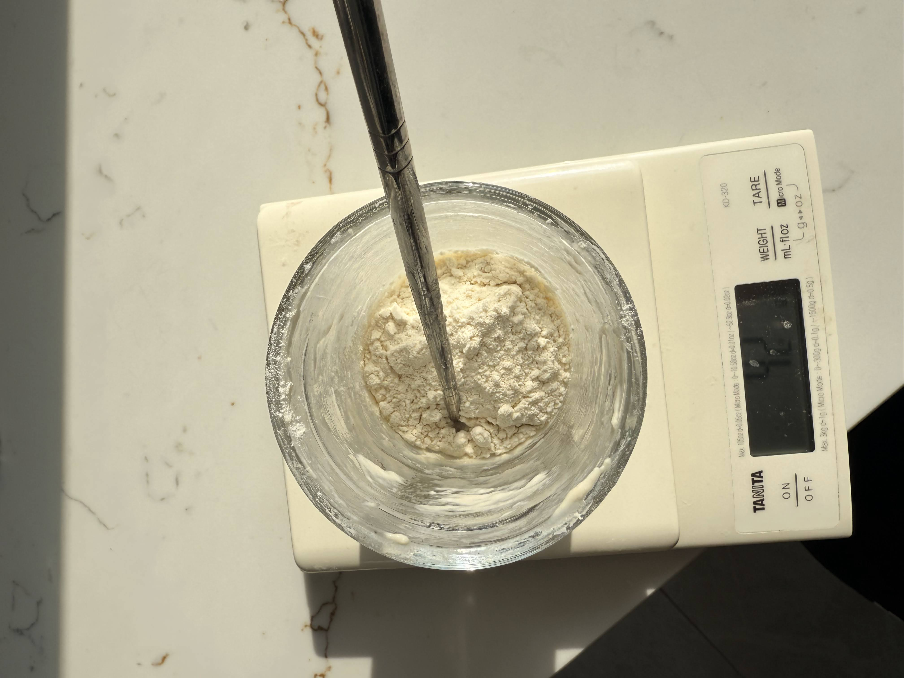

Sourdough Starter Guide: Keeping Your Culture Happy
The starter is the engine of your bread. It's just flour and water that has captured wild yeast and bacteria. Treat it like a low-maintenance pet, and it will reward you with great bread forever.
My Simple 'Scrapings' Feeding Method (No Waste!)
Many guides tell you to throw away half your starter every time you feed it. I hate waste, so we don't do that. We use the "Scrapings Method". Essentially, you keep a tiny amount in the jar (the scrapings), and only build it up when you want to bake.
This keeps your starter active and ready without accumulating excess discard. (If you don't have an active starter yet, jump down to learn how to create one from scratch first!)
How to Feed Your Starter Using the Scrapings Method
Once your starter is established and active, you can switch to this method. You'll typically feed your starter after using most of it for baking. If storing it in the fridge between bakes, feeding about once a week is usually sufficient. If kept at room temperature, it requires more frequent feeding (often daily).
-
Prepare: You need your starter jar (with just the scrapings left inside), your
digital scale, 50g lukewarm water (around 35-40°C / 95-104°F), and 50g strong white bread flour.
Top
tip - use a chopstick to stir it up!

-
Add Water & Swirl: Pour the 50g of water into the jar with the scrapings.
Give
it a good swirl or stir to loosen the old starter bits. It should resemble milky water.

- Add Flour: Add the 50g of strong white bread flour. 
-
Mix Thoroughly: Stir well, ensuring no dry flour remains. The target
consistency is
a thick paste, like peanut butter or thick yoghurt.

- Cover Loosely: Rest the lid on top or use cling film with holes.
- Let it Rise: Leave at room temperature. It should get bubbly and rise (ideally double) in 4-12 hours, depending on temp/vigour.
And that's the process! It's a straightforward, no-discard method that feeds the remaining starter effectively.
Is My Starter Ready to Bake With? Signs of Activity
Readiness is about activity, not just age. Here’s what to look for:
- Significant Rise (Doubling): Reliably doubles (or more) in volume within 4-8 hours after feeding at room temperature. Use a marker/band on the jar to track.
- Lots of Bubbles: Visibly bubbly and airy throughout, like a sponge.
- Predictable Pattern: Rises, peaks, and falls predictably after feeding. Use near its peak.
- Pleasant Smell: Smells pleasantly sour and yeasty. Not strongly unpleasant.
- (Optional) Float Test: A spoonful dropped in water floats if ready. Not always 100% reliable; visual cues are often better.
Remember Temperature & Patience! Temperature greatly affects timing. It often takes 10-14 days (or more!) to establish a strong starter. Be patient!
Why Temperature Matters (A Lot!)
Your starter's yeast and bacteria work at different speeds depending on warmth. Understanding this helps predict behaviour.
- Warm (e.g., 24-28°C / 75-82°F): Faster activity, quicker rise/peak, needs more frequent feeding if kept out. Can increase tanginess.
- Cooler Room Temp (e.g., 18-21°C / 65-70°F): Slower activity, longer rise/peak. Don't mistake slowness for weakness!
- Fridge Temp (e.g., 4-5°C / 39-41°F): Very slow activity. Ideal for storage (weekly feeding). Needs feeding(s) at room temp to wake up before baking.
The Takeaway: Aim for consistency. Use slightly warmer water for feeding if your kitchen is cool. Find a stable spot. Patience is key!
How to Strengthen Your Starter
If your starter has been dormant in the fridge for a while, or seems a bit sluggish, it's a good idea to give it a boost before you plan to bake. A stronger starter means a better rise in your final loaf. The key is consistent feeding in a warm environment.
The Process:
- Wake It Up: If your starter lives in the fridge, take it out. If there's any dark liquid (hooch) on top, pour it off. Let the starter sit at room temperature for an hour or two. The amount of starter in your jar will determine how long it will get to room temperature. If you're only storing the bare minimum using the scrapings method, then it will come up to temperature relatively quickly. This is the way I store my sourdough in the fridge.
- Give it a Feed: Perform one regular feed. Leave it at room temperature.
- Feed Again: When the starter has risen to double it's height, feed again, don't go by time as this can make your starter weaker, not stronger. You want to try and feed the starter at it's peak. This back-to-back feeding builds up the yeast population and makes the culture more vigorous.
- (Optional) A Third Feed: For a very strong starter, you can repeat the process one more time, giving it a third feed at it's peak.
After 2-3 consecutive feedings like this at room temperature, your starter should be incredibly active, bubbly, and doubling in volume quickly after a feed. This is the perfect time to use it in your recipe for a great oven spring!
Creating Your Starter From Scratch (If You Need One!)
Don't have a starter yet? It's easier than you think, but requires patience (often 10-14 days, sometimes more!). This is a common method.
What You'll Need:
- Clean glass jar (0.5-1 litre)
- Digital Kitchen Scale
- Flour: Whole Wheat or Rye flour recommended for Day 1, Strong White Bread Flour for subsequent feedings.
- Water: Filtered or dechlorinated tap water (lukewarm initially).
- Stirring utensil.
The Day-by-Day Process:
- Day 1: Initial Mix
Combine 50g Whole Wheat/Rye flour + 50g lukewarm water. Mix to thick paste. Cover loosely, leave 24h. - Day 2: First Feed
Discard most (leave ~50g). Add 50g Strong White Flour + 50g water. Mix, cover, leave 24h. - Day 3 & Onwards: Continue the daily discard/feed routine. Look for the Signs of Readiness. Once it's reliably active for 2-3 days in a row, it's ready!
Note: Ignore funky smells unless it's fuzzy mould (pink/orange/black) – discard immediately if mould appears.
Troubleshooting Common Issues
Starters are resilient. They are hard to kill, so don't worry if yours looks a bit sad. Here are the common fixes:
-
Problem: Dark Liquid Layer on Top ("Hooch")
Solution: Your starter is hungry. Simply pour the hooch off before feeding as usual. If it happens often, feed more frequently.
-
Problem: Sluggish / Not Rising Much
Solution: Be patient! Ensure it's in a warm spot and getting fed regularly. Consistency with strong white bread flour is key.
-
Problem: Runny Consistency
Solution: Double-check your measurements by weight. The target is a thick paste. If it's too thin, pour most off and feed again.
-
Problem: Funky Smells (Acetone, Vinegar, etc.)
Solution: Generally, ignore the smells unless you see visible mould. If it smells strongly acidic, it's just hungry. Feed it. BUT, if you see any pink, orange, or black fuzzy spots – discard immediately and start over.